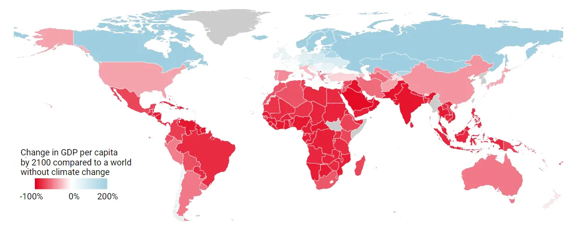
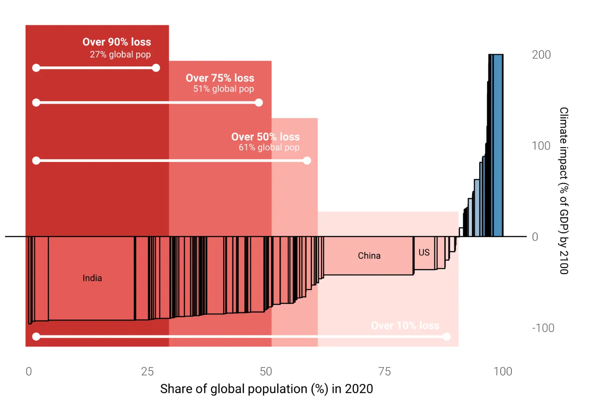
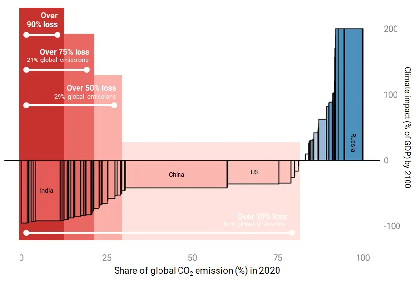
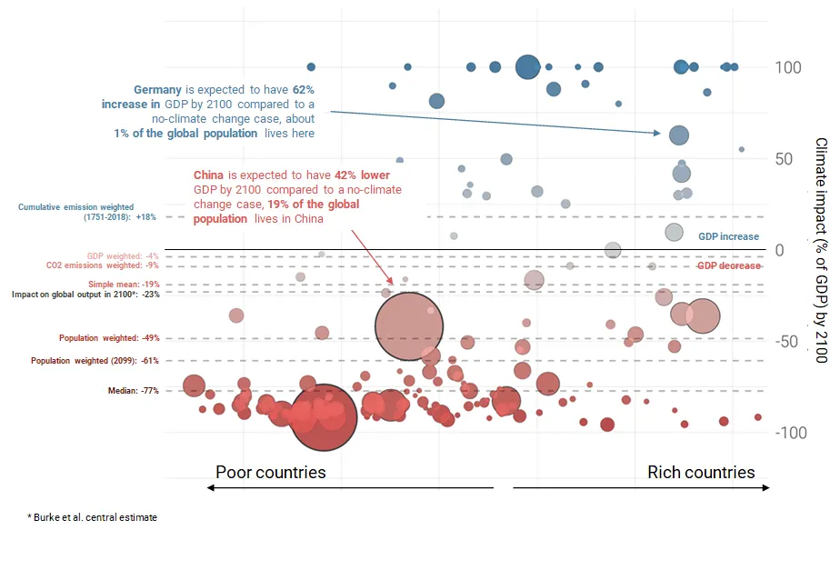

How the unequal economic impacts of climate change could make collective action harder
Originally published in Feb 2021 on Medium, co-authored with David Mihalyi
See also our interactive figure here.
How bad will the economic impacts of climate change be on average? Expert estimates on the global economic impacts of unmitigated warming (though all negative) vary quite a bit in their magnitude. And while there is debate on the best way to use models to answer the opening question, there is little attention given to the multiple ways one could interpret the question. Despite the fact that the final answer would heavily depend on it.
A consensual view is that poorer countries will be hit a lot harder. Some of the reasons provided are that many are located in already warm places, they rely more on agriculture (which is more severely affected by adverse weather impacts) and that they have less means to spend on adaptation. Though models may project differing average expected impacts, those which provide disaggregated results tend to replicate this divergence between poor and rich regions. This uneven distribution matters.
Regional differences lead to widely differing estimates of average impacts of climate change (from a single model) depending on the aggregation approach we use. Should all countries be weighted equally or weighed by some factor such as their population or GDP? There is no right answer. The method we choose depends on how we frame our question.
We illustrate how the averaging approach matters using estimates from a widely cited study by Burke, Hsiang and Miguel (2015). We chose their study for having disaggregated results made available transparently. They provide country level estimates of the economic impacts of climate change as measured by the percentage difference in GDP per capita in 2100 under a scenario with unmitigated climate change and one without any climate change impacts. It is worth noting that such empirical estimates based on historical data come with strong limitations: they focus on impacts of the variation in temperature rather than of climate change, and do not consider the impact of reaching “tipping points”.
The results of their study reaffirms that poor countries (which tend to be already warmer — a critical parameter in their model) will be hit a lot harder in terms of GDP per capita. According to this study, places like Russia, Canada can end up somewhat richer than without climate change, most developed countries will see economic harms albeit often more modest ones. Poor countries, especially in Africa, can expect dramatic economic impacts as a result of climate change (although generally projected to be richer than they are now). Their central estimate is that climate change reduces projected global output by 23% in 2100 (-23%) compared to a world without climate change.

Projections of the Economic Impacts of Climate Change by Country, Source: Burke, Hsiang and Miguel (2015)
Now let’s see some of the different ways we can aggregate these widely differing country impacts.
A first question one may be tempted to answer is how countries are impacted by climate change on average. The range of country impacts reported in the study are between -95% loss (Saudi Arabia) and x14 increase (Mongolia). Across the 163 countries there is data for, the average is -19.2%. The median country would be Colombia with damage of -77.3%, in other words half the countries on Earth can expect climate damages of at least this much.
Another question one may ask is how are people being impacted by climate change on average? This obviously recognizes that countries have very different populations, with many more living in (somewhat more impacted) Asia. A recalculation shows that the average impact is of -48.5%. Looking a bit deeper into this weighting, we can also see that half the world’s population can expect losses over 75% of income (GDP per capita), while a quarter of the global population loses over 90%. One caveat that this representation overlooks any within country inequality of impacts.

Climate change impact and current population distribution
But why use the current population, when in fact we’re talking about impacts 80 years from now? Based on UN population forecasts an increasing share of world population will live in some of the most impacted places on the planet. This is reflected in the results, which show that the average impact is -60.7% now. A key caveat that this does not account for the fact that climate change may itself impact population dynamics through migration and changes in fertility.
One could also weigh each country by their current levels of income. This would recognize the reality that a country’s influence on climate policy on the world stage is dependent on its economic significance. It would also allow for the possibility that a richer country could (in theory) agree to compensate other countries for being less forceful in fighting climate change given that they have less at risk. Impacts through this lens are less severe, with the average impact at -3.8%.
Another question to ask is how severely are those countries impacted which emit the most now or have emitted the most historically? Using the same approach and weighing with 2018 emissions shows an average impact of -9.2%, while using cumulative emissions between 1751–2018 results in a positive average weighted impact of +17.6%. This highlights how the impacts are disproportionately concentrated in countries least responsible for climate change.

Climate change impact across CO2 emission
The figure at the end presents a summary of these calculations. We have started with a simple question: “How bad will the economic impacts of climate change be on average?” As we have shown there is a large range of answers to this question depending critically on how we aggregate country-level impacts.
Given the dire consequences of climate change, why does the international community do so little to avoid it? Short-sightedness and incentives to free ride may play an important role (see debate), but our simple calculations and graphs shown above suggest the uneven distribution of economic impacts could also hamper collective action. If global climate policies were being agreed on the basis of average (or median) impact on the expected population in 2100, then much bolder responses would be warranted. And if the world’s climate emission reduction plans were to be agreed among a smaller club of current major emitters, though it may help with coordination and enforcement, it could skew their perception of how serious the expected impacts really are.

Average climate change impacts under different aggregations
See Github repo of calculations and interactive figure here.